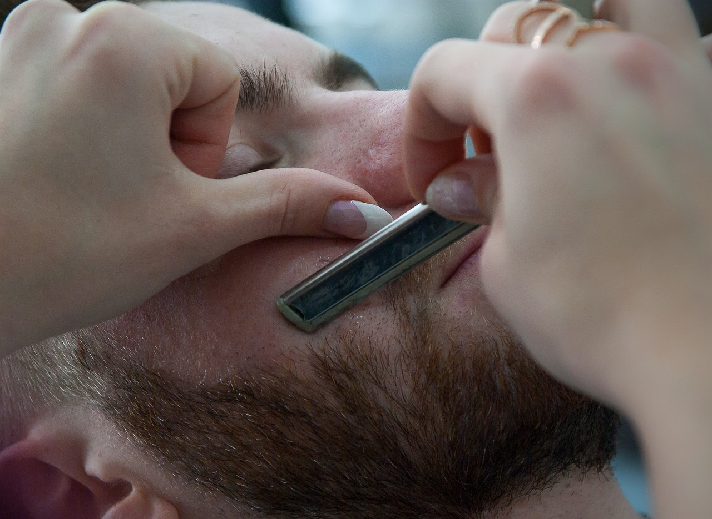

Corte Degradê
O mais incrível sobre o corte que está em alta é permitir variar a altura em que o degradê começa, podendo ser alto, médio ou baixo. Também é possível criar variações de acordo com o comprimento do cabelo do topo, do tipo do fio e do estilo do risco navalhado - se tem risca ou forma um desenho no cabelo.
Corte Social
Para alguns homens, o estilo de corte social moderno tem chamado bastante atenção. Apesar de o tradicional ser um clássico, as versões contemporâneas lembram muito cortes como o undercut, agradando quem não é muito fã do convencional.
Corte Barba
A barba é um dos elementos visuais que melhor retratam a virilidade e a masculinidade do homem e, por isso, se tornou um dos “acessórios” mais presentes na rotina do homem moderno, sendo bastante cultuada por sua importância estética, cultural e social e passando, ao longo dos anos, de uma característica reservada apenas a certos estilos visuais ou grupos para se tornar um fator de beleza e estilo, ganhando espaço no cotidiano masculino e no rosto de um grande número de homens famosos, usando os melhores cortes de barba e ditando modas que se espalham pelo mundo todo.
